Raúl Pérez
Senior Product & Interaction Designer
CoCounsel is Thomson Reuters' generative AI assistant for law and accounting professionals: people who have trusted Checkpoint, the industry's authoritative tax and law database, for decades.
Shortly after launch, I joined the Core Team to design the interaction architecture of the central Conversations experience: 8 projects to create a scalable interaction system that could make people trust this product.
Led all 8 projects end to end - driving the full UX lifecycle from initial problem definition and user research to interaction architecture, UI mockups, and high-fidelity prototypes.
Worked closely with PMs, Content Designers, Accessibility Experts, Design Researchers, Design Managers, and Software Engineers - in order to articulate our goals and clearly define the project scopes.
Designed Product Requirement Documents and Roadmaps with scalable stages of each new feature, in order to act fast and consistently, to improve the experience of the whole product.
Helped different teams to maintain consistency and quality standards among their projects, by defining the base interaction systems for the Core Features from the product and expanding our Design System & A11y standards.
Product definition & strategy - designed the PRDs that became the product roadmap: Problem statements, Goals, User Stories, Feature Priorities, Benchmarks, Potential Success Metrics.
Research operations - Weekly usability sessions with practicing tax professionals, planned along with the Design Research team and working together on the implementation from the obtained insights.
Systems design - Design each project as a scalable framework, instead of a one-off solution, so the team can easily build on the top of the Core Design Language as CoCounsel evolves, keeping interactions consistent across the product.
GenAI interaction patterns - a five-phase visible thinking process, category-based citations, source backtracking, and data tables where every cell links to its evidence.
Cross-functional collaboration - from benchmark-informed decisions with product and engineering, to a welcome-email series built with Marketing in the product's design language.
🏆 Goals
The Source Backtracking raised engagement - answers where users interact with citations grew from 8% to 41%, tracked weekly by leadership and sustained after the launch weeks. Click-throughs to sources rose 27%.
Six operationally defined success metrics.
Built for what comes next - Provided one unified system to build on, which cut the time spent designing custom features and keeps the interaction logic consistent as the product grows.
What is CoCounsel?
Thomson Reuters' CoCounsel
"CoCounsel Tax & Audit" answers tax and accounting questions and backs every answer with citations from Thomson Reuters' Internal Database (The "Checkpoint" library) and primary sources like the IRS, FASB, GASB, AICPA, and IFRS.
Since launching in March 2025 it's been picked up by firms of all sizes across the US, saving people about 32% of the time on a task, according to the latest TR reports.
It is part of the wider CoCounsel platform, which reached one million users across 107 countries in February 2026, and it won a 2026 Stevie Award.
CoCounsel's first 1M users
The Design Challenge
Lawyers and Tax professionals can not rely on a AI generated answer that they can not verify; and many users are senior practitioners with around twenty years of experience using Thomson Reuter's most popular product: "Checkpoint", which its still built around "Structured database research" interactions, and will now facing an open chat box.
Also, 3 constraints shaped every decision:
GenAI mechanics - probabilistic outputs, multi-minute processing on complex queries, failure modes that arrive unannounced.
Regulatory volatility - U.S. tax law was being restructured faster than official sources could publish, so live web data had to come in without eroding Checkpoint's authority.
Speed - the product had just launched and the strategy was fast implementation; every pattern had to be quickly shippable and widely reusable.
So we focused on making every answer verifiable at each step where a professional could ask, "why should I trust this?"
Senior Product Designer
As a Senior Product Designer on the Core team, I was responsible for the definition of some of the base features for the Conversations experience con CoCounsel (A chat-based Gen AI platform), aiming to create a consisten system for the Core Design Language.
I led each of the 8 features below, working along with my design team and partnering with engineering, product, and research teams:
Document Upload
Error Handling framework
Tool Rendering (the "thinking" view)
Spreadsheets / State Charts
Citations and the Source Backtracking process
Web Search
Onboarding Chats
Welcome Emails
This also led me to define part of the Product Strategy and the Design Research related to them.
The main strategy was to work on the seven features as one architecture, not a backlog, with three main goals in mind:
Grounding: Being clear about that the AI knows
Verification: show its work and its sources
Adoption: lower the entry barrier for skeptical experts

Solving a puzzle
In the high-pressure environment of tax accounting, the document ingestion experience was originally a fragmented "black box."
The team identified that users were struggling with "truncated identifiers" (not being able to tell which file was which) and a general lack of status feedback. This created a mental model mismatch: professionals didn't know if their local files had successfully reached the platform's knowledge base or if they were even referencing the right version of a document. For an expert whose work depends on accuracy, this uncertainty was a major barrier to trust.
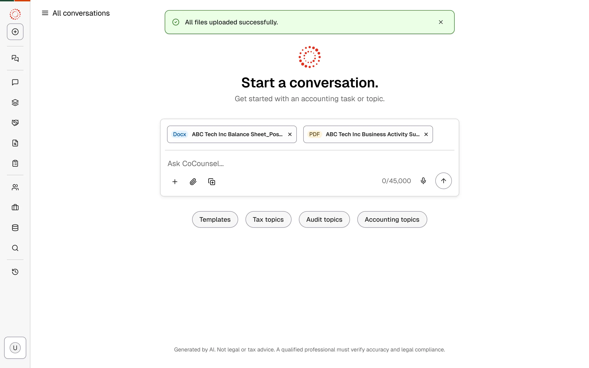
Mockup example: "All files uploaded successfully"
In the high-pressure environment of tax accounting, the document ingestion experience was originally a fragmented "black box."
The team identified that users were struggling with "truncated identifiers" (not being able to tell which file was which) and a general lack of status feedback. This created a mental model mismatch: professionals didn't know if their local files had successfully reached the platform's knowledge base or if they were even referencing the right version of a document. For an expert whose work depends on accuracy, this uncertainty was a major barrier to trust.

"All files uploaded successfully"
This was based on a diagnosis of the entire user experience to identify specific friction zones. I then used these findings to develop a comprehensive PRD that served as the project's strategic backbone, ensuring our roadmap was grounded in real-world professional needs.
Instead of treating features in isolation, we tackled the “Document Management” journey as a coherent, scalable system: Every phase of the document lifecycle (Selection, Upload, Error Handling, Processing and Reference) had its own distinct visual state and clear affordances, prioritizing clarity and professional trust throughout.
Before building the GUI, the team defined the roadmap through a comprehensive PRD to ensure alignment on these core pillars:
Context Opacity: Truncated filenames and lost document origin (source/type) prevent experts from verifying data grounding.
Persistence Ambiguity: Uncertainty regarding the temporal scope; how and for how long a file influences the AI across turns.
Interaction Inconsistency: Fragmented silos between legacy menus and new drag-and-drop triggers cause cognitive friction.
Command Confusion: A gap between industry-standard "@" shorthand expectations and the existing UI response.
Standardize Visual Feedback: Replace legacy elements with Design System components to ensure visual and functional consistency across all upload states.
Integrate Keyboard-First Interaction & Visual Grounding: Use industry-standard @ and / syntax with "Reference Chips" and autocomplete to provide a high-precision method for anchoring the AI to specific data sources.
Establish Contextual Hierarchy & Temporal Scope: Use markers and badges to differentiate between "General Knowledge" and "@Mentioned" files while clearly communicating the document's lifespan (Answer Vs Whole Conversation).
Deploy Actionable Error Transparency: Replace generic alerts with granular, per-file feedback (e.g., size or format issues) and integrated "one-click" retry functionality for immediate resolution.
Accuracy & Trust: Focuses on eliminating professional liability by ensuring full visibility of file names and ingestion status, preventing users from basing critical advice on failed or incorrect data.
Efficiency & Speed: Prioritizes reducing the "Time-to-Insight" through high-precision shorthand like @-mentions, allowing power users to bypass menus and anchor the AI to sources instantly.
Reliability & Consistency: Centers on building user confidence through predictable UI patterns (like standardized drag-and-drop) and clear visual signals that confirm the AI is actively "reading" the provided context.
P0 (Safety & Reliability): Non-truncated identifiers (full names/icons), granular upload status, and one-click retry functionality.
P1 (Productivity): Standardized Design System ingestion across all flows.
P2 (Enhancements): Support for action commands (e.g., /summarize) directly within the chatbox.
Reliability: Error Resolution Rate (retries vs. abandons), Context Verification Speed (the time to identify a specific file within a batch of 10+ similarly named documents) and User Confidence Scores.
Efficiency: Shorthand (@) Adoption Rate and Time-to-Insight (TTI—from upload start to first grounded response).
We analyzed file-handling limits and referencing patterns across Gemini, Claude (Project context), ChatGPT (Connected apps), Microsoft Copilot (M365 integration), Perplexity (Spaces), Grok (Cloud connectors), and Notion AI (Referencing connectors).
We translated those strategic goals into a Component-Based Interaction System. We wanted the UI to feel "state-aware" so the user always knew exactly what the system was doing.
We redesigned the basic file attachment into a multi-functional "Smart Chip."
Visual Badging: We integrated file-type icons (PDF, Excel, Word) so users could identify their files at a glance.
Hover Dynamics: To fix the "Truncated Name" issue, we added a hover interaction that reveals the full file path and name, which is critical for precision during audits.
We established a visual language to manage expectations during LLM processing
Uploading: A gray background with an active loader to signal progress.
Error: A red background with a warning icon—moving away from cryptic code errors to actionable states.
Ready/Mention: A distinct design for files already in the knowledge base vs. those just uploaded.
Shorthand Reference (@ Mentions): We designed a "Search-as-you-type" menu triggered by the "@" key. This allows power users to pull in existing documents without ever taking their hands off the keyboard.
Unambiguous Drop Zones: We built high-contrast "Drop" areas that provide clear visual confirmation of the target zone, ensuring a reliable drag-and-drop experience.
By replacing generic errors with "Actionable Error Chips," we intended to improve the Error Resolution Rate, giving users the clarity to retry or fix issues themselves.
The combination of badges and hover states eliminated guesswork, allowing users to verify their data context significantly faster during high-volume sessions.
The focus on TTI as our primary benchmark ensured that the tool remained a professional-grade asset rather than a source of latency.
The "@" mention system successfully bridged the gap between "local files" and "system knowledge," making the chat feel like a unified, professional-grade workstation.
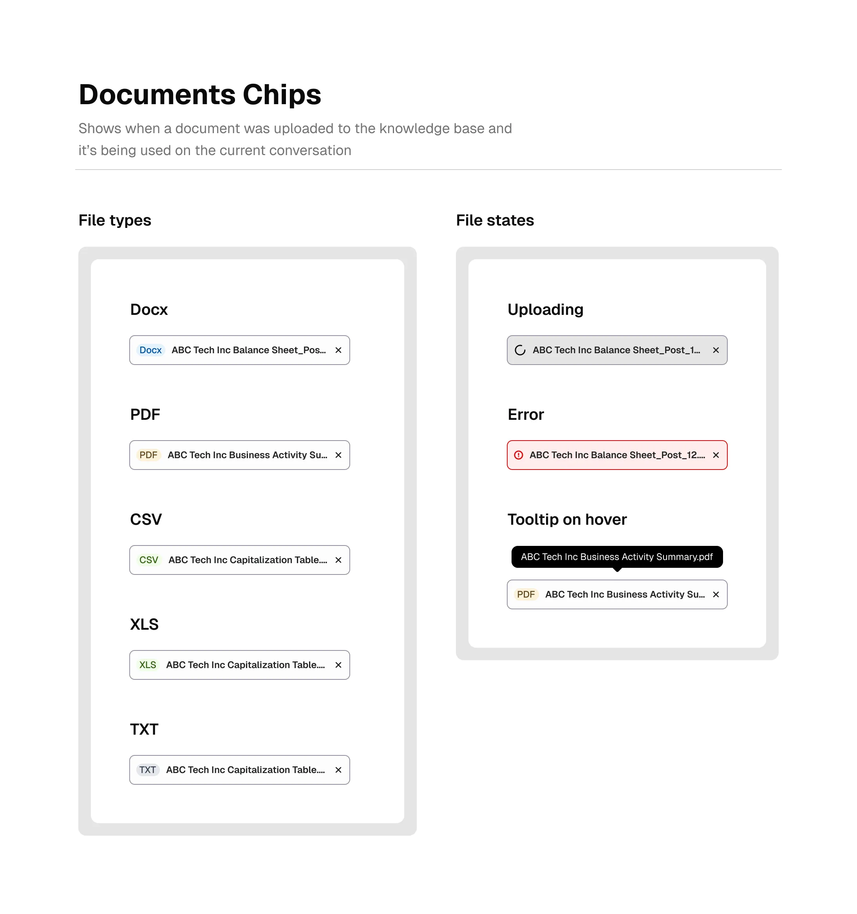
Component example: Document Chips
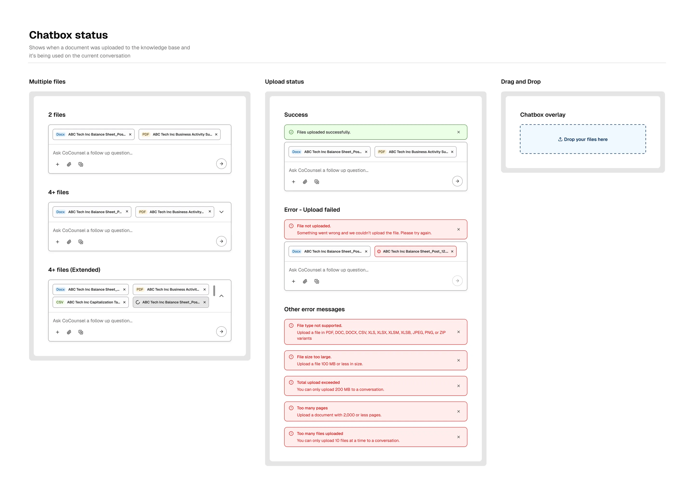
Component example: Chatbox states
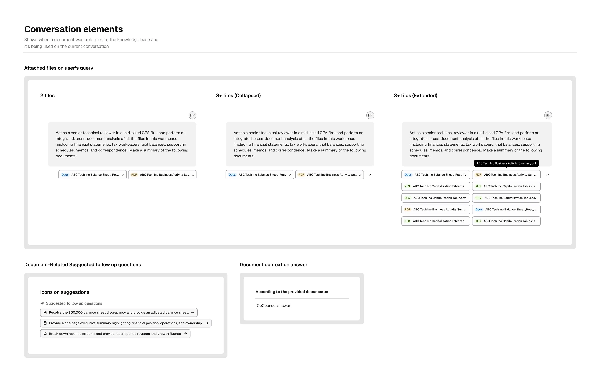
Component example:
Conversation elements & variables
For tax professionals, a "correct" answer from an AI is useless if it cannot be verified against official sources.
Standard AI citation patterns (typically small numerical footnotes) are insufficient for high-stakes audits because they lack context regarding the nature or reliability of the source.
The challenge was to design a system that allowed experts to navigate dozens of sources of varying authority (official legislation vs. web news vs. internal files) without being overwhelmed by information density.
Prototype example: Cited Sources Panel
We moved beyond generic footnotes to create a Semantic Citation System.
This system explicitly categorizes evidence into distinct categories, allowing users to prioritize official Thomson Reuters "Checkpoint" data over external web sources or local documents. The interaction focuses on a seamless loop between the AI’s summary and the original evidence.
We redesigned static numbers into interactive "Chips." These chips provide immediate semantic context by displaying the source category (e.g., "Checkpoint", "Web" and "Documents") and the quantity of sources supporting that specific claim. Clicking a chip serves as a direct trigger to open the auditing panel.
I re-designed a dedicated sidebar with tabbed categorization (All, Checkpoint, Web, Documents). This structure prevents "list fatigue" and allows users to filter for the specific type of evidence they need for their audit.
To minimize context switching, the "Cited Sources" panel was designed to transform into a high-fidelity document viewer. When possible (Checkpoint or local files), users can read the original text directly within the panel; for external web links, the system provides structured cards with direct browser deep-links.
By providing a clear, categorizable path to the source of every claim, we directly addressed an important barrier to AI adoption in the tax industry: the fear of non-verifiable information.
The semantic chips and tabbed sidebar allow professionals to perform "spot checks" or "deep dives" with significantly lower cognitive load compared to traditional unstructured citation lists.
The "Citation Chip" and "Source Card" patterns were built as reusable components for the core UI Kit, ensuring that any future tool added to the CoCounsel platform (like the "Charts" or "Filters") inherits the same high standard of transparency.
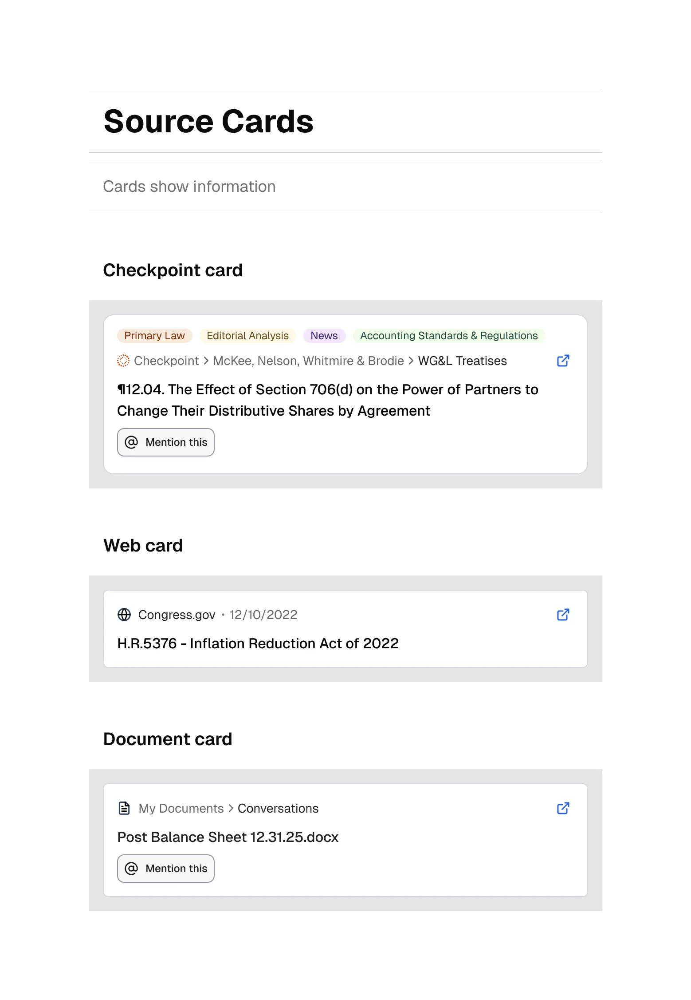
Component example: Source Cards
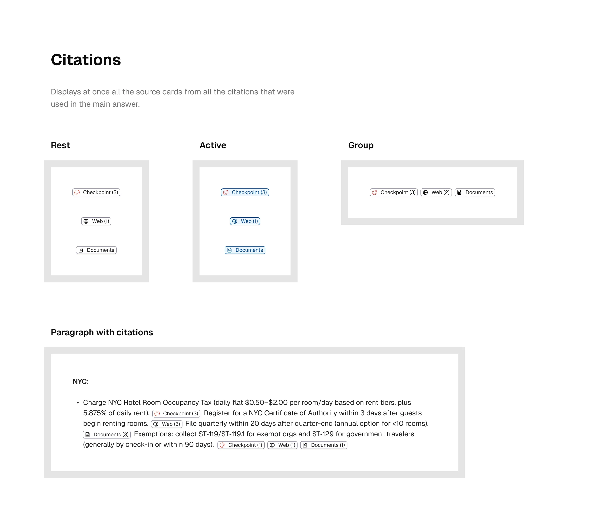
Component example: Citation Chips
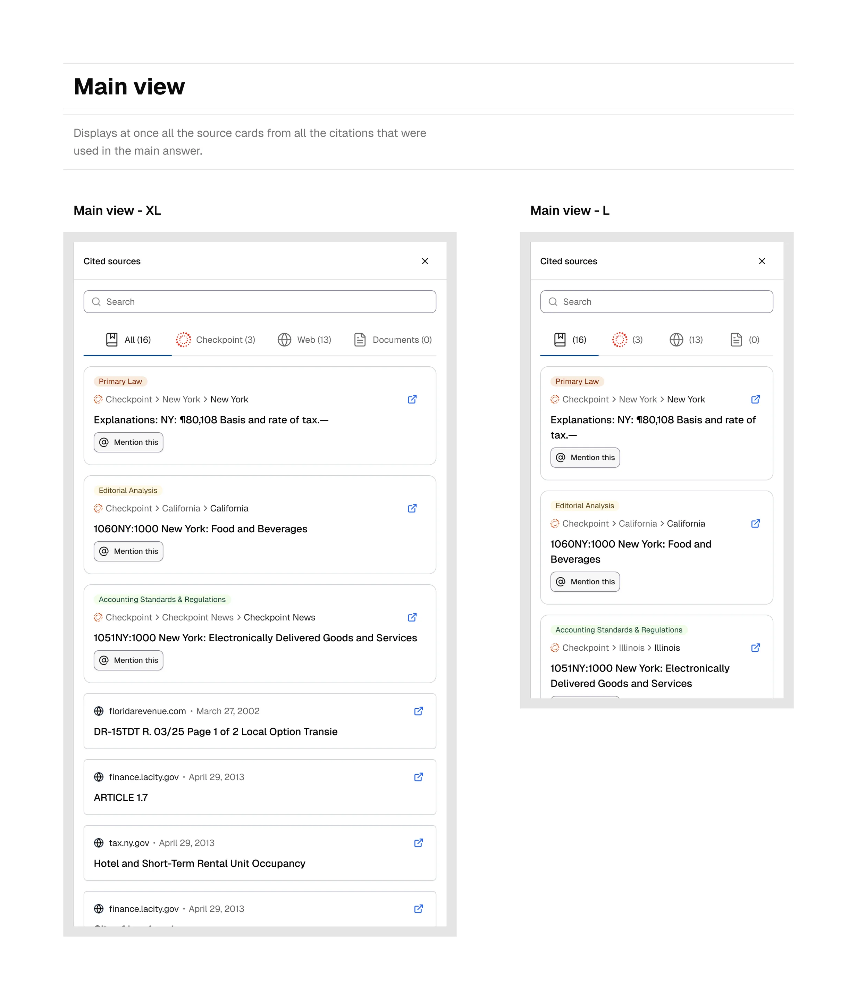
Component example:
Cited Sources panels
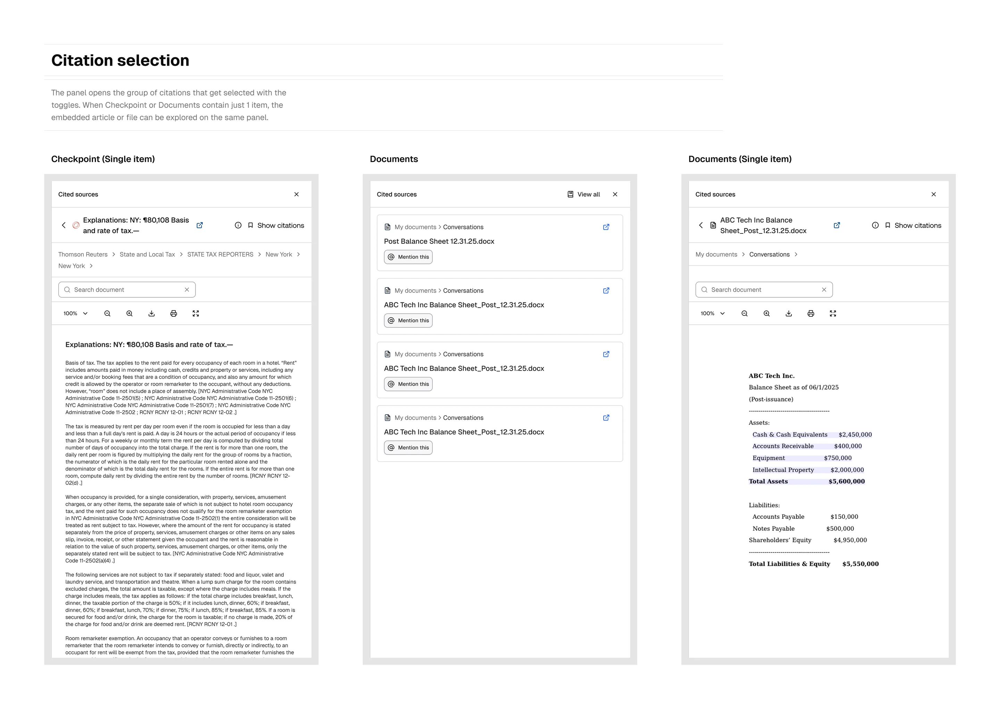
Component example:
Citation selection
High-stakes queries often require several minutes of LLM processing, and the industry-standard "loading spinner" fails the "Visibility of System Status" heuristic. This lack of transparency causes "black-box anxiety," where users are unable to verify if the system is grounding its research in correct sources or hallucinating its logic path. For a professional with legal liability, this opacity is a critical risk factor.
"Backtracking sources" prototype
I designed an Interaction System based on "Narrative Transparency," transforming internal system logs into a human-readable research trajectory. This approach was heavily influenced by observing background processing patterns in relevant AI products like Gemini and Copilot, but I tailored it to meet auditing standards required for tax and legal professionals.
The objective was to externalize the LLM’s "Chain of Thought" into a structured, audit-ready UI that moves away from "AI magic" toward "AI reasoning." By benchmarking how industry leaders handle high-latency transparency, I developed a framework that provides enough detail for verification without overwhelming the user. We categorized this research lifecycle into five semantic phases to ensure the narrative felt logical and trustworthy:
1️⃣ Starting the Search: We show the user that the AI has understood their question and is preparing the right "tools" to find the answer.
2️⃣ Checking the Expert Library: The system explicitly shows it is looking through the "Checkpoint" database, TR's gold-standard library for tax and law.
3️⃣ Reviewing Your Documents: If the user uploaded files, the AI confirms it is reading them to make sure the answer is tailored to their specific case.
4️⃣ Looking for Live Updates: The AI checks the live web to see if there are any brand-new law changes or news that aren't in the official books yet.
5️⃣ Writing the Final Answer: Once the research is done, the AI tells the user it's now putting everything together into the final response or chart.
To keep the UI clean, I built a collapsible "Logic Tree." Users see a simple summary of what's happening at first. If they want to audit the AI's work, they can click to expand any step and see exactly which links or files are being used.
Research showed that most participants would stop a query if they detected the AI going down the wrong path. I implemented a persistent "Stop" button active during the thinking phase, allowing for early intervention and saving both time and system credits.
I expanded our ShadCN library to include standardized AI state components. I defined "Active," "Done," and "Error" states to ensure consistency across the entire v1 platform.
To handle unpredictable latency, I designed the micro-copy to update dynamically (e.g., "Scanning page 5..."). This reassures users who are multitasking that the system hasn't frozen.
Addressing a specific usability find where expanded sections would auto-collapse on new updates, I implemented a "persistent expansion" logic so users don't lose their place while auditing a live process.
Based on our research process and feedback from tax professionals, we established several key goals to ensure the "Tool Rendering" added real value to the daily workflow:
Explore showing high-level process steps automatically. Participants wanted to see the workflow without needing to click, reducing the interaction cost for a quick status check.
Implement explicit progress indicators (like a progress bar or estimated time). Users multitask while the AI "works," so they need clear expectations to manage their time effectively.
Make internal references (like specific sections of "Reviewing Checkpoint") clickable. For complex tax codes, users don't just want to know that we checked a source; they want to jump directly into the source to verify the logic.
Investigate "Confidence Scores" or accuracy indicators. Tax experts want to know when they need to apply extra scrutiny to an answer versus when the AI is operating on high-certainty data.
Even if users don't check the process every time, the mere presence of the "steps" builds trust. It serves as a psychological safety net—an audit trail they can rely on for client-facing advice.
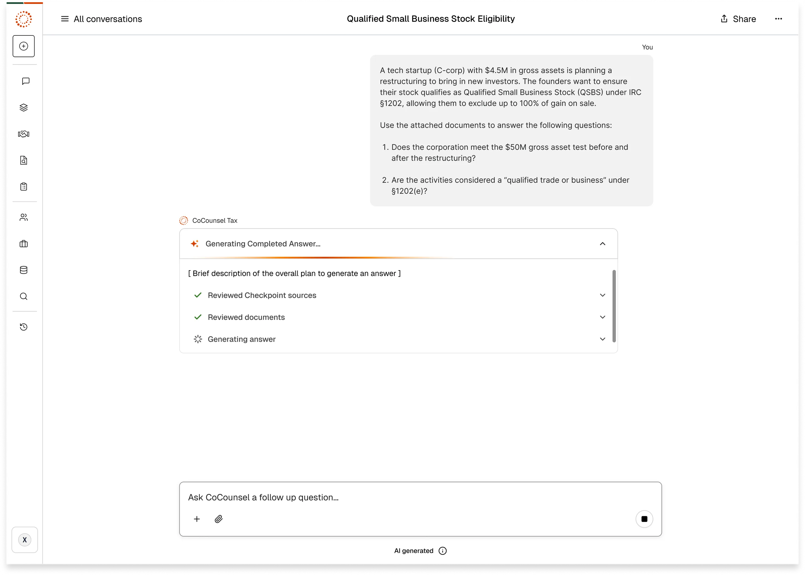
Mockup example: Thinking process component
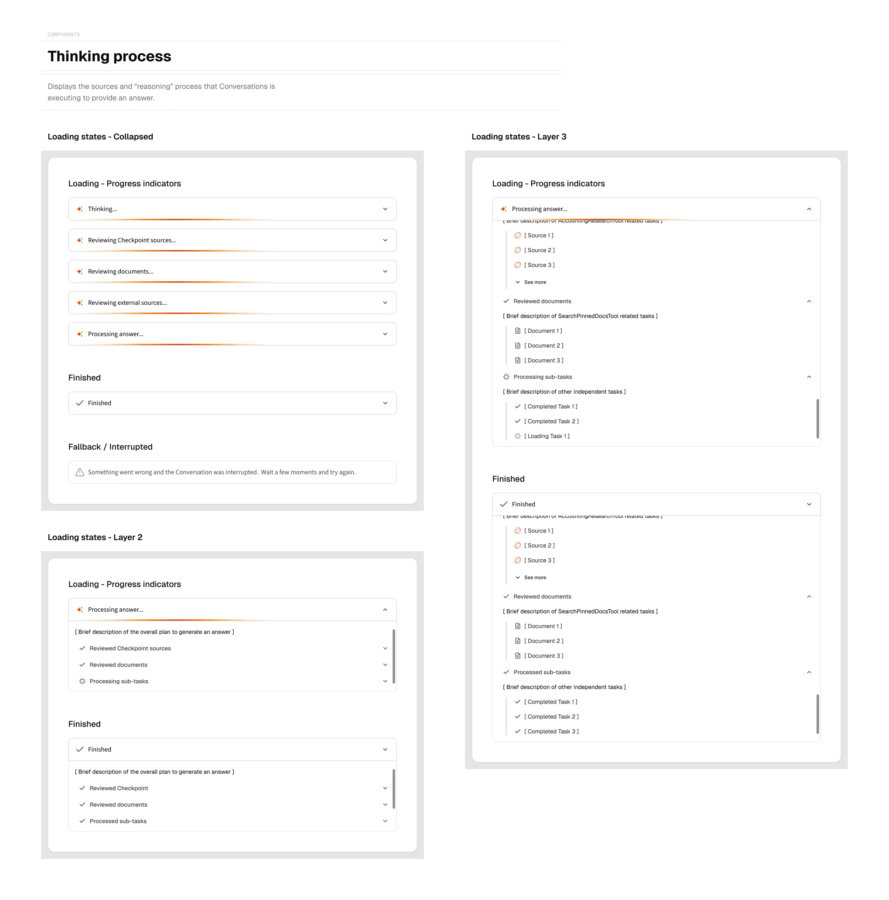
Component example: States and variables
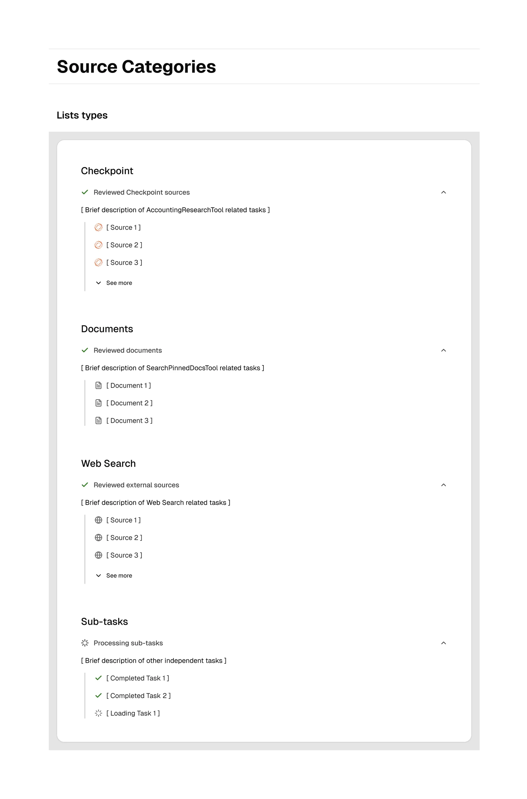
Component example: Source categories
For tax accountants and auditors, raw text is an inefficient format for comparing complex data across multiple dimensions, such as varying tax rates across 50 states over several years. The primary challenge was to take unstructured GenAI responses and organize them into a structured, high-density format that allowed for rapid auditing and cross-referencing without losing the context of the underlying citations.
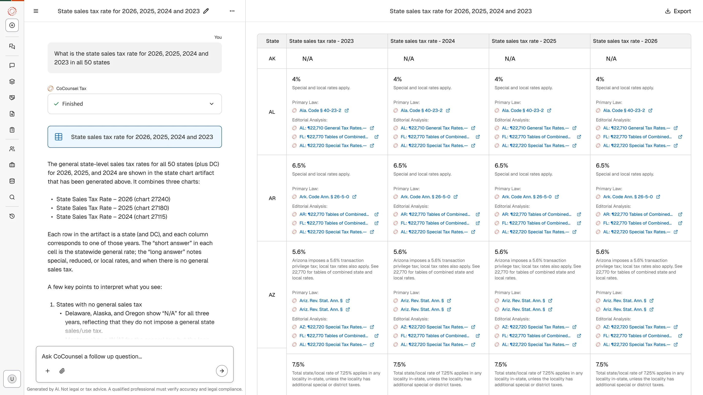
Mockup example: Chart with 4 columns
To maintain consistency and scalability, I moved away from designing a static table and instead designed a modular interaction system for the table cell. Each cell was treated as a self-contained information architecture (IA) unit containing:
1️⃣ Primary Answer: The core data point.
2️⃣ Clarifying Metadata: Secondary text for nuance.
3️⃣ Audit Trail: Direct links to "Primary Law" and "Editorial Analysis" sources.
To solve the horizontal space constraints of a chat window, we implemented an "Artifact" pattern where clicking a chart result opens a side panel covering 2/3 of the screen. This provides the necessary "breathing room" for complex multi-column tables.
I performed a "clutter audit" of the initial MVP, stripping away redundant borders and visual patterns. This ensures that when 50+ cells are visible at once, the user’s focus remains on the data rather than the UI noise.
I defined a rigorous system for column behavior across 1080p and 720p resolutions, including min/max cell lengths. This ensured that regardless of the query complexity (e.g., comparing 3 vs. 10 states), the information remained legible.
Recognizing the user's need for external reporting, we prioritized a "Export to CSV" feature, allowing professionals to move their verified data from CoCounsel into their existing Excel workflows.
By enabling "at-a-glance" comparisons across states and years, we drastically reduced the time accountants spent manually collating information from multiple chat turns.
The inclusion of source-specific links within every cell built a direct bridge between the AI's summary and the "Checkpoint" source of truth, satisfying the rigorous verification standards of tax experts.
The CSV export and side-panel interactions allowed the tool to fit seamlessly into the professional's broader work ecosystem, rather than being an isolated chat experience.
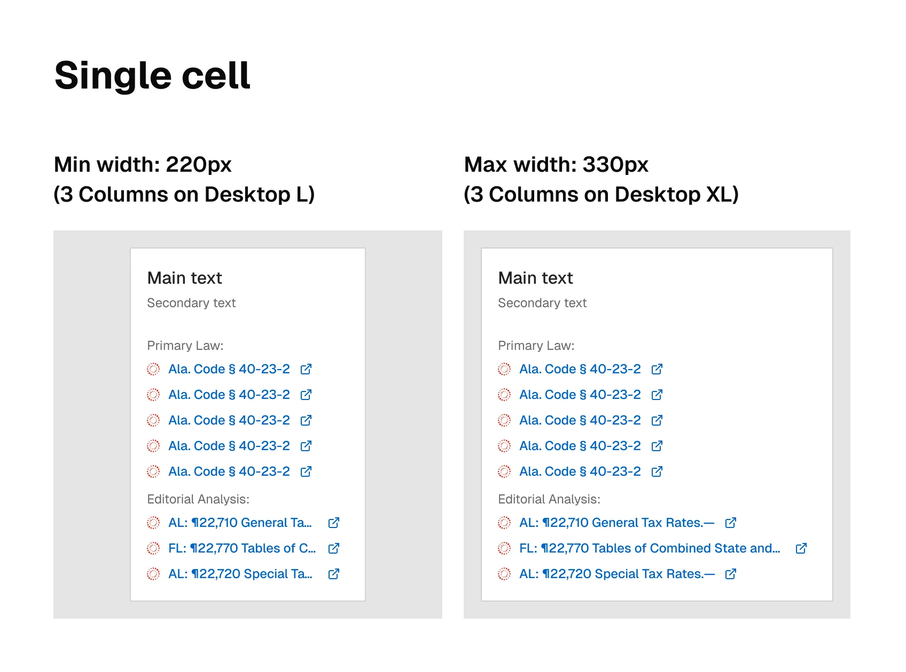
Component example: "Single Cell"
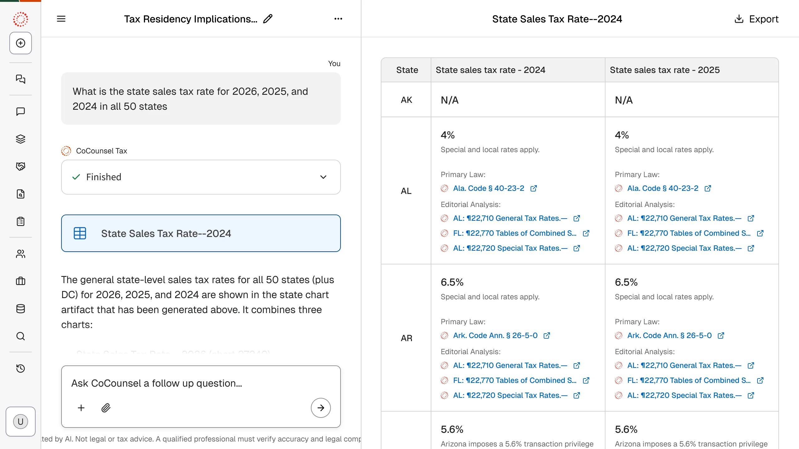
Mockup example:
Adaptative on low resolutions
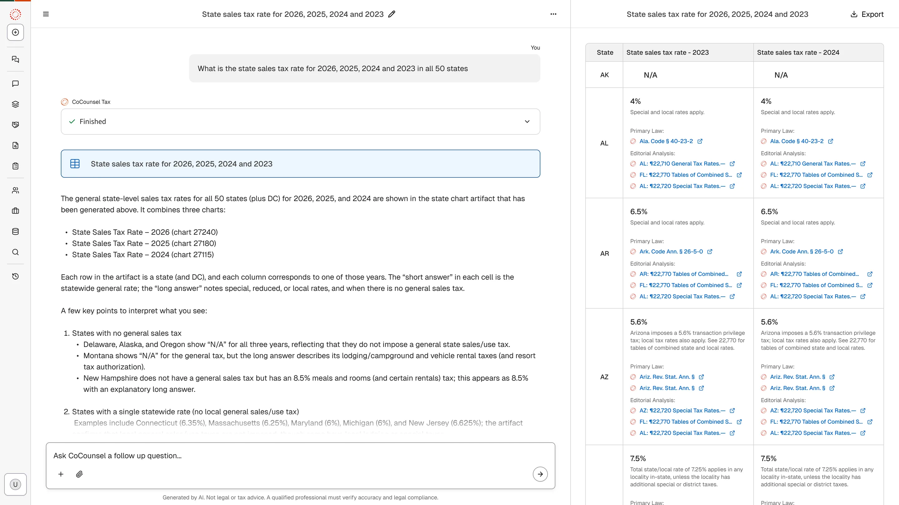
Mockup example:
Low density
Tax professionals operate in a high-volatility environment where legislation can change overnight. While Thomson Reuters’ "Checkpoint" database is the industry gold standard for official records, there is often a critical time lag between a news announcement and its official publication. Users needed CoCounsel to bridge this gap by consulting mainstream media and external sources without compromising the tool's perceived authority
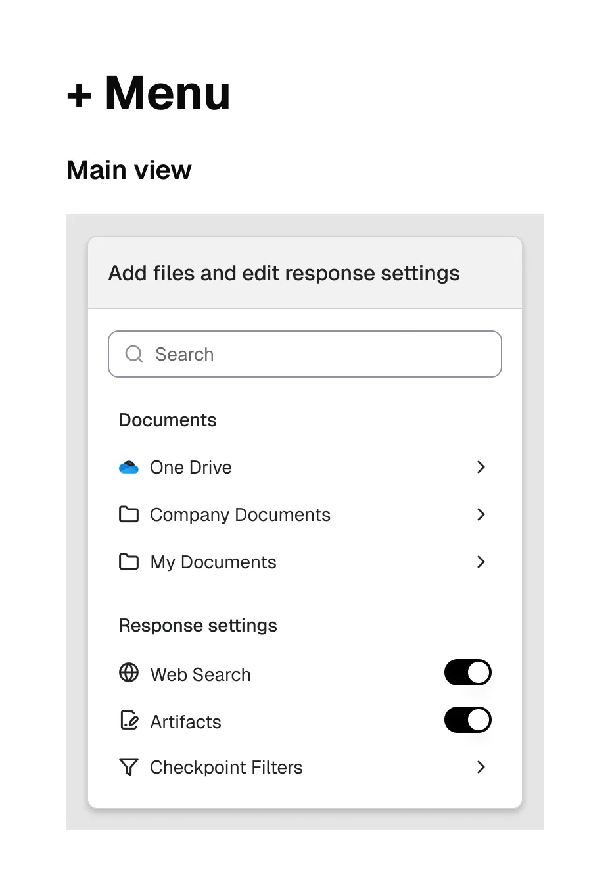
Mockup example: Web Search trigger on +Menu redesign
The goal was to make external web data feel as structured and verifiable as internal database records. My strategy focused on:
1️⃣ Contextual Awareness: Integrating "Websites consulted" directly into the "Thinking Process" (Project 1) so users could see the live search happening.
2️⃣ Visual Hierarchy: Designing a distinct "Web Source" visual language (using the "Globe" icon and specific metadata) to immediately differentiate external news from official internal citations.
3️⃣ User Agency & Control: Implementing a toggle within the "+" menu settings. This allows users to strictly limit the AI to official "Checkpoint" data when legal certainty is paramount, or enable Web Search for real-time agility.
I redesigned the interaction flow in the global command menu to include the Web Search toggle. This placement ensures that source control is always "top of mind" before starting a query.
I designed a modular card component for external results that ensures visual consistency whether it appears in the chat stream or the dedicated sidebar. These cards include a Website Title, URL, and Timestamp—the latter being a critical audit feature that allows tax experts to verify if the news is the most recent update available.
I extended the "Cited Sources Panel" to include a specific "Web Search" tab. This categorization allows "Power Users" to audit external vs. internal sources separately, reducing the cognitive load required to verify a complex answer.
Enabled CoCounsel to be useful for "breaking news" tax scenarios, significantly expanding the product's use cases beyond historical research.
By clearly labeling external sources, we maintained the integrity of the "Checkpoint" brand while still providing the broader information users requested.
These patterns were not isolated; I integrated the Web Search visual language and logic into the "Tool Rendering" (Thinking Process) project, the "Citations" framework, and the "Cited Sources Panel." This ensured that every project mentioned in the platform's ecosystem shares a unified method for handling non-proprietary data.
A significant segment of CoCounsel users are senior tax and legal professionals who have relied on traditional, static databases like "Checkpoint" for decades. Transitioning to a Generative AI chat interface presents a steep learning curve; these users often face "blank canvas paralysis," unsure of how to structure a prompt or what specific capabilities the tool offers.
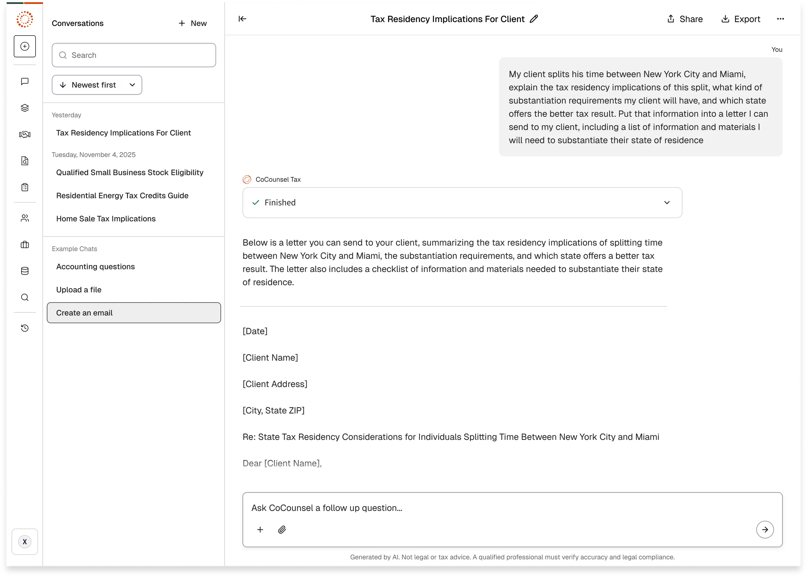
Mockup example: "Create an Email" onboarding chat
To bridge the gap between traditional search and conversational AI, I designed an onboarding system that utilizes affordances and familiar UI patterns.
Rather than a forced tutorial, I integrated "Example Chats" directly into the existing Chat History sidebar. This approach allowed users to "peek" into high-quality interactions without the pressure of formulating their own first query.
I curated three "Golden Path" examples that highlighted core platform value:
Email Drafting: Transforming complex data into a professional client email.
Analysis: Reviewing and extracting insights from locally uploaded documents.
Research: Handling general accounting queries against the proprietary knowledge base.
I placed these samples in a dedicated "Example Chats" category within the sidebar. By leveraging the affordance (where users already expect to find and click on conversations) we ensured the entry point felt natural. Using the same list-item pattern as real chat history allowed users to intuitively understand that these were clickable, interactive records they could explore.
Each example contained a pre-filled query and a complete AI-generated response. This served as a silent "tutorial" on the ideal tone, structure, and length of prompts required to get professional-grade results.
By providing immediate "Proof of Value," we reduced the cognitive load required for the first interaction, helping non-tech-savvy users move from "spectators" to "active users."
The examples established clear expectations for AI behavior, reducing frustration and "trial and error" by demonstrating exactly what the tool can (and cannot) do.
By leveraging the existing "Chat History" architecture and adding custom sorting/filtering rules, we ensured the onboarding experience felt like an organic part of the platform's evolution rather than a bolted-on feature.
In a B2B environment, a firm’s purchase of a software subscription does not automatically guarantee user adoption. Many professionals continue to use legacy workflows, either unaware of the new tool's capabilities or hesitant to change their habits. The challenge was to create a "re-engagement" loop that transformed passive subscribers into active CoCounsel users.
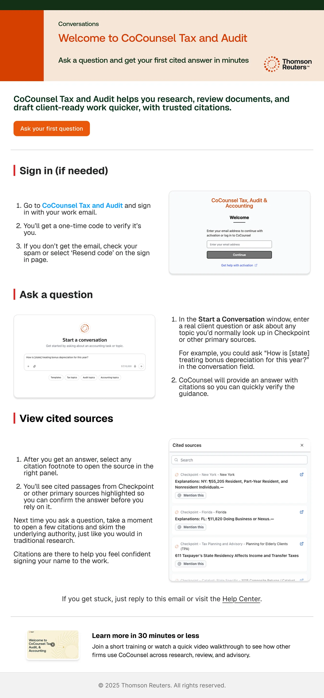
Mockup example: The first email
I collaborated with the Marketing and Graphics departments to design a 5-part email lifecycle series.
The strategy focused on incremental value delivery: starting with basic access and moving toward complex, high-value tasks. I ensured the transition from "Inbox to App" felt seamless and low-friction, focusing on the continuity of the experience.
The team defined the feature highlights for the core emails in the sequence:
Email 1 (The Kickoff): Focused on reducing entry barriers (Sign-in tutorial) and the core promise of "Citations for Trust."
Email 4 (Document Intelligence): Introduced the "Document Upload" and "Summarization" workflows to solve specific data-heavy pain points.
Email 5 (Efficiency Mastery): Highlighted "Prompt Templates" to help users move beyond basic chat.
Since this project originated outside the core UX department, a gap analysis was performed between Thomson Reuters' marketing guidelines and the CoCounsel UI. We synchronized banners, typography, and button styles to ensure the emails looked and felt like the platform itself.
Every email centered around a single, high-intent action: "Ask your first question." This direct deep-link minimized "choice paralysis" and funneled users directly into the chat interface.
By proactively addressing common friction points (like sign-in and source verification) in the inbox, the team aimed to drive higher activation rates for firms that had already invested in the subscription, ensuring the tool's value was visible early in the user lifecycle.
The team successfully bridged the gap between marketing communication and product experience, ensuring a consistent brand voice across the entire user journey.
By integrating links to short-training videos within the emails, the team provided a "safety net" for users who preferred visual learning over text-based prompts, catering to diverse professional learning styles.
Role: Product Designer
Role: Senior Product Designer · Core team
Role: Product Designer
Role: Product & Interaction Design Team Lead